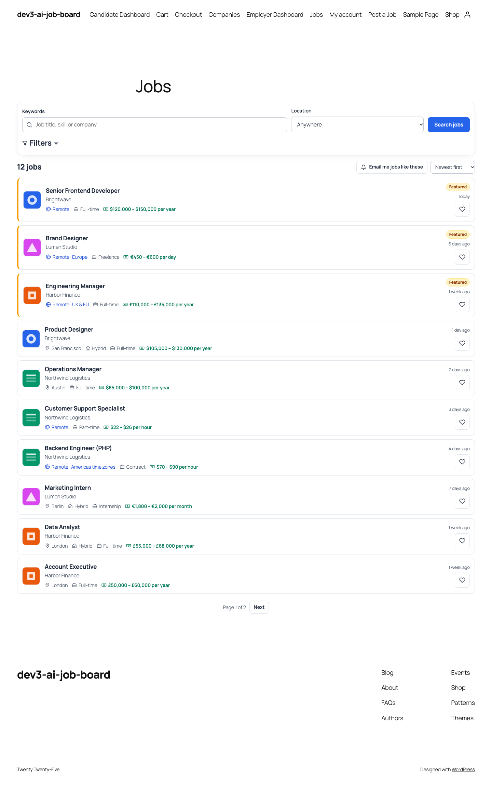
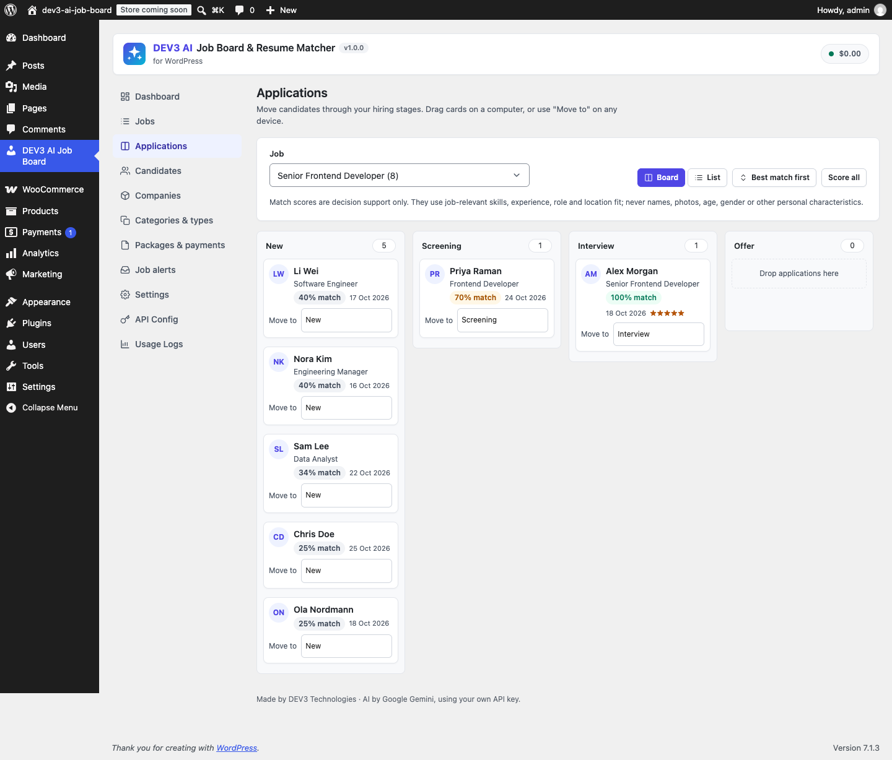
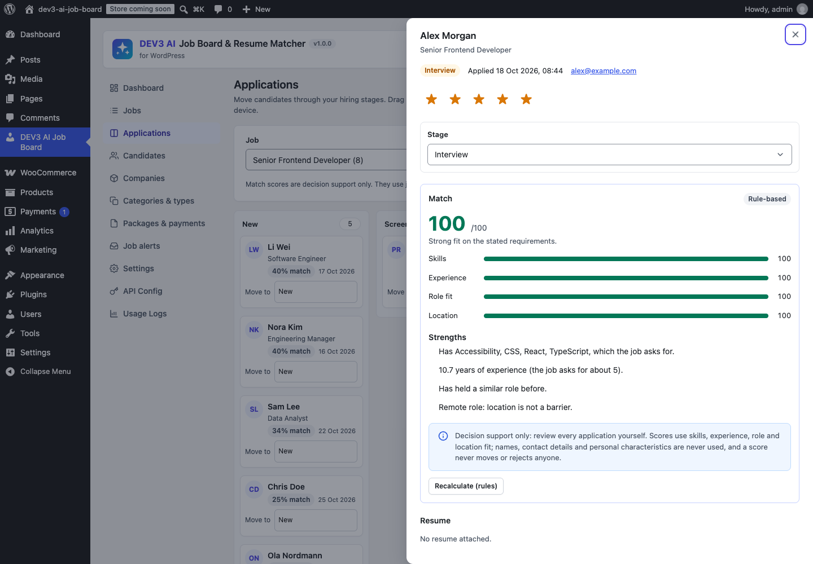

A complete job board for WordPress: jobs and companies, front-end posting with paid packages, employer and candidate dashboards, an applications pipeline, job alerts and Google for Jobs markup. Optional DEV3 AI features (Google Gemini, your own key) write job ads, read resumes and explain match scores.



Installation
- Requirements: WordPress 6.0+, PHP 7.4+ (tested on 8.3). WooCommerce 8+ only if you want WooCommerce checkout.
- Plugins > Add New > Upload Plugin, choose
dev3-ai-job-board.zip, Install, Activate. - On activation the plugin creates the pages Jobs, Post a Job, Employer Dashboard, Candidate Dashboard and Companies, the roles Employer and Candidate, and default job types (Full-time, Part-time, Contract, Temporary, Internship, Freelance).
- Add the pages to your menu. Open DEV3 AI Job Board > Settings to review moderation, applications and emails.
- Add categories and locations in Categories & types (locations can be nested, e.g. Germany > Berlin).
Nginx: resume files are protected by .htaccess on Apache. On Nginx add location ~* /uploads/dev3jb-private/ { deny all; }. Files also have random names.
Google Gemini API key
- Go to Google AI Studio and create an API key (there is a free tier; you pay Google for usage above it).
- In WordPress open DEV3 AI Job Board > API Config, paste the key, Save, then Test. The key is stored encrypted and never sent to the browser. You can also define
DEV3JB_GEMINI_API_KEYinwp-config.php. - Pick models (defaults: gemini-2.5-flash and gemini-2.5-pro), set a monthly budget and the visitor-AI switch. Usage Logs show requests, tokens and estimated cost.
Without a key every feature still works with its non-AI fallback.
Jobs, companies and the job board
- Job fields: title, description, company, categories, job type, location, workplace (on-site, hybrid, remote + region), salary range, currency and period (or hidden), experience level, skills, how to apply (on this site, external link, email), expiry date, application deadline, featured, filled.
- Statuses: Live, In review, Draft, Awaiting payment, Expired. A daily task expires jobs and warns employers a few days before (Settings).
- Job board: keyword and location search, filters (category, type, workplace, minimum salary, date posted), sort by newest or salary, featured first, AJAX paging with shareable URLs. Category, type and location archives open the board with that filter. RSS:
/?feed=rss2&post_type=dev3jb_job. - Single job: chips (location, workplace, type, salary, level, deadline), description, skills, apply box, company box and similar jobs.
- Companies: logo, tagline, website, industry, size, headquarters, founded, about. Every company has a page listing its open jobs.
- Google for Jobs: JobPosting JSON-LD on live jobs with title, description, datePosted, validThrough, employmentType (set per job type), hiringOrganization, jobLocation or remote requirements, baseSalary, identifier and directApply. Test with Google's Rich Results Test.
Employers: posting jobs
- Visitors register as employers from the Post a Job page (Settings > "Let visitors create accounts"), or you create users with the Employer role.
- Job details: pick or add a company (with logo), fill in the job, and use the writing assistant (notes in, structured job ad out) and Check wording (inclusive-language suggestions). Nothing is used until the employer clicks "Use this description" or "Replace".
- Preview the job exactly as candidates will see it.
- Package: use remaining credits or buy a package. Free packages publish (or queue for review) at once.
- The Employer dashboard lists jobs with status, applications, views and expiry, with Edit, Mark filled/Reopen, Relist (expired jobs) and Delete.
Packages and payments
- Packages have a price (0 = free), job posts (credits), days live, featured placement and a "Most popular" highlight. Employers can also buy packages in advance.
- Offline: employers get your payment instructions by email; mark the payment paid in Packages & payments and the job goes live (or to review).
- Stripe Checkout: add your secret key and webhook signing secret; webhook URL is shown in the screen (event
checkout.session.completed). Test mode is detected fromsk_test_keys. Payments are also verified when the employer returns. - WooCommerce: each package becomes a hidden virtual product; a processing or completed order activates the package. Compatible with HPOS and the block checkout.
- Admins can give employers free credits ("Give an employer free job posts").
Applications pipeline
- Stages: New, Screening, Interview, Offer, Hired, Not a fit (candidates may also withdraw).
- Kanban board in the admin (Applications) and in the employer dashboard: drag cards between columns on a computer, or use the "Move to" menu on any device. Below 720px the board becomes a stacked list grouped by stage.
- The application panel shows the candidate profile, resume download, cover letter, match score, a 5-star rating, private notes and an activity timeline. When changing stage you can email the candidate a status update with a personal message.
- Candidates see neutral status words: Received, In review, Interviewing, Offer, Hired, Not selected.
- Blind screening (Settings > Fairness): employers see "Candidate #123" without contact details until they move the application to Interview.
Candidates
- Profile: headline, city/country, phone (shared only when applying), summary, skills, workplace preference, wanted job types, experience, education and links.
- Resume upload (PDF, .docx, .txt; size limit in Settings). The resume reader fills the profile; the candidate checks every field and saves.
- Applying: logged-in candidates apply with their profile and resume in one click; guests (optional) enter name, email, phone, cover letter and a resume. Applications need a consent tick.
- Dashboard tabs: Profile, Applications (with Withdraw), Saved jobs, Job alerts and Recommended jobs.
Job alerts
"Email me jobs like these" on the board saves the current search. Logged-in users are subscribed at once; guests confirm by email. Digests go out daily or weekly with new matching jobs and a one-click unsubscribe link. Admins see all alerts and can send due digests now.
DEV3 AI features
| Feature | Where | Without AI |
|---|---|---|
| Job description writer (tones: professional, friendly, startup, formal) | Admin job editor (review with a diff), Post a Job form | Structured outline from notes |
| Inclusive-language check | Admin job editor, Post a Job form | Built-in word list (age, gender, origin, ability, jargon) |
| Resume parsing to a profile | Candidate dashboard; admin "Try the resume parser" | Built-in PDF/Word/text reader with section rules and the site's skill list. Scanned PDFs need AI. |
| Match score with explanation | Pipeline cards and application panel (admin and employer) | Rule-based score with written reasons |
| Score all applications (background job) | Applications / job editor | Instant rule-based scores |
| Job recommendations | Candidate dashboard | Skill and role overlap; with AI the semantic index (Settings > Update index) improves role fit |
How scores work. The rule score weighs skills (40%: the job's skills found in the profile), experience (25%: years vs. the level and "N+ years" in the ad), role fit (20%: similar titles; plus semantic similarity when indexed) and location/workplace (15%). With AI on, DEV3 AI reviews the anonymised profile against the job and the final score is the average of both, with strengths, gaps and a summary that cite the job's requirements.
Fairness and responsible use
- Never used or sent to AI: name, email, phone, photo, age or date of birth, gender or pronouns, marital or family status, pregnancy, nationality, ethnicity, religion, disability, health, sexual orientation, union membership, political views, street address.
- The profile has no fields for these; the parser schema has none; any such keys returned by AI are dropped; names are scrubbed and contact details masked before matching.
- Scores are decision support only. They never move, hide or reject a candidate, and every score card says so.
- Audit hooks:
dev3jb_protected_attributesanddev3jb_match_payload. - Employers remain responsible for complying with local employment and anti-discrimination law.
Blocks and shortcodes
| Shortcode / block | Attributes |
|---|---|
[dev3jb_jobs] · Job board | per_page, filters="yes|no", category, type, workplace (fix a filter, e.g. a remote-only board) |
[dev3jb_job_search] · Job search box | — |
[dev3jb_recent_jobs] · Recent jobs | limit, featured="yes", category |
[dev3jb_companies] · Companies | limit |
[dev3jb_submit_job] · Post a job form | — |
[dev3jb_employer_dashboard] | — |
[dev3jb_candidate_dashboard] | — |
Colours follow the accent colour in Settings; override CSS custom properties on .dev3jb (e.g. --dev3jb-accent, --dev3jb-ink, --dev3jb-line).
Developer hooks
| Hook | Type | Use |
|---|---|---|
dev3jb_job | filter | Job array used in templates, REST and schema |
dev3jb_search_query | filter | WP_Query args of a job search |
dev3jb_schema_job | filter | JobPosting JSON-LD |
dev3jb_template_job_card, dev3jb_template_single_job | filter | Front-end markup |
dev3jb_email | filter | Every email (return empty to cancel); second arg is the event key |
dev3jb_inclusive_rules | filter | Word list of the inclusive check |
dev3jb_skill_vocabulary | filter | Skill names used by parsing and matching |
dev3jb_protected_attributes, dev3jb_match_payload | filter | Fairness audit |
dev3jb_parse_send_pdf | filter | Send the PDF itself to AI (default: when it has little text) |
dev3jb_file_access | filter | Who can download a private file |
dev3jb_job_slug, dev3jb_company_slug | filter | URL bases |
dev3jb_prompt_<id> | filter | Prompt templates: dev3jb_describe, dev3jb_inclusive, dev3jb_parse_resume, dev3jb_match |
dev3jb_job_saved, dev3jb_job_published, dev3jb_job_pending, dev3jb_job_expiring, dev3jb_job_expired | action | Job lifecycle |
dev3jb_application_created, dev3jb_application_stage | action | Applications |
dev3jb_payment_completed, dev3jb_manual_payment_created | action | Payments |
dev3jb_resume_saved, dev3jb_user_registered | action | Candidates and accounts |
REST API (/wp-json/dev3jb/v1/)
- Public:
GET listings(search),POST listings/<id>/apply,POST listings/<id>/save,POST alerts,POST stripe/webhook. Public routes are same-origin and rate limited. - Employer (logged in, own jobs only):
employer/jobs,employer/applications,employer/applications/<id>(+/notes,/match),employer/jobs/<id>/score,employer/ai/describe,employer/ai/inclusive. - Candidate (own data only):
candidate/profile,candidate/resume-file,candidate/parse,candidate/applications,candidate/saved,candidate/recommended. - Admin (manage capability):
admin/*for jobs, applications, candidates, companies, terms, packages, payments and alerts.
FAQ
Can I use it as a single-company careers page?
Yes. Create one company, post jobs from the admin, and turn off registration.
Can I approve jobs before they go live?
Yes: Settings > New jobs > Wait for my approval. Approve from Jobs (bulk) or the editor.
Is the AI required?
No. Everything works without a key; AI adds better writing, parsing of scanned resumes and explained scores.
Where is personal data?
Applications in wp_dev3jb_applications, profiles as private posts, files in the private uploads folder. Tools > Export/Erase Personal Data covers applications, profiles, alerts and files.
Uninstall
Data stays unless "Delete all job board data when the plugin is deleted" is on in Settings.
Changelog
1.0.0
Initial release.